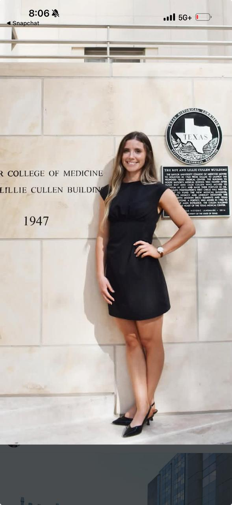

Roy & Lillie Cullen Building, Baylor College of Medicine


👤 Profile
Name: Abby
Age: ~25
Location: Houston, TX
Profession: Physician Assistant
Education: Baylor College of Medicine (PA program — top 10 nationally)
Relationship to Kasey: Connected through Colton (Kasey's best friend) → Colton's wife Sarah → Sarah's friend → Abby
Key quote: When shown Kasey's photo, told her friend she's "a whore for guys with really short hair"
🔗 The Connection
Path: Colton (Kasey's best friend) → Sarah (Colton's wife) → Sarah's friend → Abby
Who initiated: SHE DID. Expressed immediate physical attraction when shown Kasey's photo.
Connection type: Warm introduction through trusted friend network. Pre-vetted on both sides.
Professional barriers: NONE. Unlike Taylor (TMB 190.8 patient-provider risk), this is completely clean.
Status: ✅ First contact made April 2, 2026. Date confirmed — Saturday April 5, 6pm at Colton & Sarah's / neighborhood restaurant.
📊 Compatibility Scores (Kasey-Specific, Projected)
🔍 Analysis
Why she's #1 priority: Abby is Taylor without the barriers. Same profession (PA), better school (BCM vs Mary Hardin-Baylor), cleaner connection (friend network vs patient-provider), she initiated (vs Kasey initiating with Taylor), she's available (vs Taylor seeing someone), and there's zero professional/ethical complication.
What BCM tells us: Baylor College of Medicine's PA program is top 10 nationally. You don't get in without strong academics, clinical experience, and drive. She spent her twenties grinding — undergrad, clinical hours, 30-month program. She knows what sacrifice and discipline look like. She's surrounded by doctors and residents daily — that's her baseline for comparison.
What her reaction to Kasey's photo tells us: She's direct, confident, unfiltered. She knows what she wants physically and isn't afraid to say it. That's a different energy than Taylor (professional, measured, careful) or Cami (available but shallow). Abby has the credentials AND the boldness.
What Kasey offers that her BCM world doesn't: The doctors and residents she works with are credentialed but often have never built anything with their hands, never flown an airplane, never managed 30 service vehicles. Kasey's combination — Eagle Scout + pilot + electrician + business partner + marathon runner + sober by choice — is something she's never encountered in the medical center. She's going to be more impressed than she expects.
The no-degree question: BCM women respect credentials. Normally "no degree" is a filter. But Kasey's achievements WITHOUT a degree tell a better story than most people's achievements WITH one. If she Googles "Kasey Hodge" — Congressional Record, FAA certificates, LinkedIn #1 — the degree question answers itself.
Can she handle Michael / Jessica? Projected: YES. PA training includes grief, death, terminal illness daily. She's not Cami. She's been in rooms where people get the worst news of their lives. The Michael test and the reality of Jessica's ALS (Kasey's stepmom) are more likely to pass with a healthcare-trained woman than almost anyone else in Kasey's orbit.
📱 First Contact & Date Status
Kasey's text (April 2, ~10:50am):
Abby's reply (April 2, ~1:03pm):
Kasey's reply:
Abby's response (April 2, evening) — UNPROMPTED FOLLOW-UP:
Analysis (Opus 4.6 + GPT-5.4 — April 2): This is two moves, not one. "See you Saturday!" would have been a complete, appropriate close. She reopened the thread anyway — sent another message about Wayne. That's not about the dog. That's a woman who didn't want the interaction to end. The ❤️ react seals it: women are surgical with emoji choices. Thumbs up = acknowledged. Heart = I like you and I want you to know it. Both models agree: interest level is high. She's in. Not politely open — actually in. The audition already happened when Sarah showed her Kasey's photo. Saturday isn't about convincing her — it's about confirming what she already feels.
Read: She said "great" — not "sure" or "okay." She hearted his first text. She's engaged and enthusiastic. The Wayne callback was perfect — warm, funny, zero tryhard energy. Then she came back for more.
Context: Abby is staying at Colton & Sarah's this weekend alone watching their new puppy Wayne. Zero logistical friction. She arrives Friday, date is Saturday at 6pm.
Strategy going in: Consider bringing dinner over vs. walking to restaurant — she's already in the house, it's cozy, the puppy kills any awkward silence. Make it a date not a group hangout. End before she's ready for it to end. Ask for round 2 before the check comes.
Do NOT mention: The short hair comment. She'll think about it when she sees him in person.
⛪ Character & Values Intel (Added April 2)
Church — chosen, not inherited: Started going on her own accord about a year ago. No external pressure — she walked in by choice while living in Houston's medical scene where the social pressure runs toward brunch and bar culture. She went looking for something: community, meaning, grounding. That's internal work. That's self-awareness.
The "whore for short haired guys" comment — reread: Word choice matters. She didn't say "I prefer" or "I like." She said whore — to a trusted friend in a private Snapchat context. That's not performance. That's authentic, unfiltered self-expression with the people she trusts. She's comfortable in her own skin and unbothered by how she sounds with her inner circle.
What these two things say together: She's not one-dimensional. Genuine faith AND raw, unfiltered humor with the people she's close to — that's not contradiction, that's range. Women who are only one of those things are flat. She's got depth.
The Kasey alignment: She independently chose to pursue something values-based (church) without being forced to — the same energy as Kasey choosing to stop drinking without a mandate. Two people making quiet, values-driven decisions on their own. That's a significant signal. They're running the same operating system without having met yet.
"Grounded in something real, unfiltered with the people she trusts. That combination is exactly what the new Kasey needs — someone who can hold both."
📊 Abby vs The Field
vs Taylor: Same profession, better school, cleaner connection, she initiated, available, zero barriers. Taylor has confirmed emotional depth and the slow-burn advantage. Abby is projected higher but unproven on depth.
vs Cami: Not even the same conversation. BCM PA vs no career. She initiated vs mutual FWB drift. Likely can hold Michael vs shuts down. Abby is the ceiling. Cami is the floor.
vs Parking Garage Girl: Warm connection (10/10) vs cold approach (25-30% probability). Known attraction vs unknown everything. Abby wins on every measurable dimension except the romance factor of a note on a car.
🧠 Family Psychology & Wiring
- Parents divorced at 3: Bio parents don't speak ("don't signs" at all). The adults in her life completely failed to model conflict resolution or communication.
- Father: Not terribly close to him. Proves our theory on the divorce at 3; sibling bond became primary, which means high loyalty to inner circle but potential abandonment sensitivity with men.
- Step-Mom: Wasn't really close to her. Reinforces the theme that her core safety/loyalty was built horizontally (with siblings) rather than vertically (with parental figures).
- Maternal Wiring: She actively nurtured and "mothered" by choice her younger half-brother. Shows high caretaking instinct and willingness to step into a maternal role when the adults in the room failed.
- The Silence Trigger: She gets extremely frustrated/triggered when people go silent because she grew up watching her parents ice each other out. This is why she explicitly values communication.
- Divorce Alignment: Kasey brought up the topic of divorce. They explicitly discussed their fears around it (both are children of divorce). Aligned that divorce is "not on the table" once married. She deeply respects her older brother (getting married this week) for taking this exact approach. This is high-level foundational alignment on Date 4.
🔥 Date 4 (At Her Place) — The Deep Dive
Overall Confidence Score: 95% (Post-Date 4 Attachment Spike)
Emotional Pacing & Vulnerability
- The Grief Bandwidth: Kasey dropped his armor and shared deep family stuff (deaths, ALS). She didn't flinch. She asked for *details on every death*. She said "everyone has shit" and immediately closed the physical distance on the couch to embrace him for an extended period. This is an extreme safety signal—she made him feel truly "seen".
- Pacing Disclosure: She signaled she has more family stuff to unpack, but explicitly chose to hold it back due to time. This is high EQ—avoiding a mutual trauma-dump, letting Kasey have the floor, and creating a natural hook for the next deep conversation.
- Desire for Leadership: She explicitly told him she appreciated him taking charge/control and said she would follow. This is a massive green light indicating she *wants* to drop the caretaker armor and let a competent man lead.
The Caretaking Instinct
- Remembered his favorite dessert (chocolate chip cookies) from prior conversations and bought them specifically for the date. Active listening translated into care.
- Cooked him dinner and packed him leftovers for lunch the next day. High maternal/caretaking energy.
Physical Intimacy & Boundaries
- The Escalation: Heavy making out. Kasey explicitly asked for consent to put his hands in her pants. She said yes. This proved he is reading her pacing and actively building safety.
- The Restraint: Kasey fingered her, and she orgasmed pretty easily (she was highly engaged, kissing during). He never pushed to escalate further (didn't ask for anal, didn't ask for sex). This demonstrates elite restraint and proved he isn't just trying to score.
- The Aftermath: Stayed very close/half-naked for the remainder of the evening. She did not reciprocate (no orgasm for him), which Kasey sensed meant she held the line at sex. This is structured boundary setting, not selfishness. She accepted pleasure but avoided flipping the night into full sexual surrender yet.
Love Language Alignment (Perfect Loop)
- Kasey's Receiving: Quality Time, Acts of Service, Touch.
- Abby's Giving: Acts of Service (cooking, packing lunch, cookies).
- Abby's Receiving: Quality Time / Attention.
- Kasey's Giving: Quality Time.
- They naturally give exactly what the other person is wired to receive. This explains why attention makes her feel safe and why Kasey feels "seen".
The 10-Day Trip Protocol (Executing Today)
- She is going out of town for 10 days. She hates texting but gets anxious with silence.
- Kasey's Play: He is calling her today to state directly from the heart: "I want to hear your voice or see your face 1x a day while you're gone."
- Why it works: It kills the ambiguity, shows extreme confidence, and provides the exact safety net (attention) her nervous system requires to stay bonded while away.
"Taylor without the barriers. Same ceiling. Zero friction. She came to HIM."
"She's going to be more impressed than she expects to be. She's going in thinking 'cute guy with short hair.' She's going to leave the first date thinking 'where has this guy been?'"